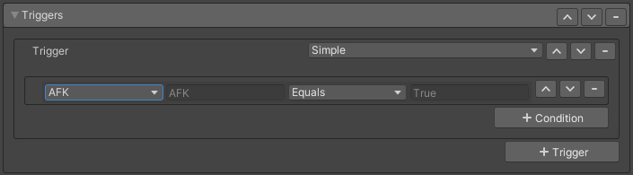

Triggers

Adds additional conditions in order for the control to be ON/OFF.
This is an advanced option and requires knowledge of how animation controller states work.
- Trigger: What type of trigger do you want to add. Typically it's easiest to use "Simple".
- Simple: Handles both the enter and exit conditions simultaniously. You only define specify the enter conditions. Unlike other types, any one condition being false will trigger the state to exit.
- Enter: A trigger for entering the state.
- Exit: A trigger for exiting the state.
Note
Each trigger is checked separately. So if you have multiple triggers, only one needs to be true to enter or exit the state.
- Conditions: The actual parameter checks being performed for this trigger.
- Parameter: What parameter you want to check. Custom allows you to use any custom parameter, the other values are known VRChat parameters.
- Operation: What operation is used to check the values.
- Value: What value to check the parameter against.
Note
When a trigger has multiple conditions, all conditions must be true for the transition to work. Except for the case of "Simple" which it's automatic exit conditions are check separately.
Note
When applied to an action that already has implied conditions, such as a Toggle or a Gesture, those conditions are added to all your triggers. For example: You have a Toggle with an added Trigger which checks for AFK to be true. For the action to occur, both the Toggles needs to be turned on and AFK needs to be true.